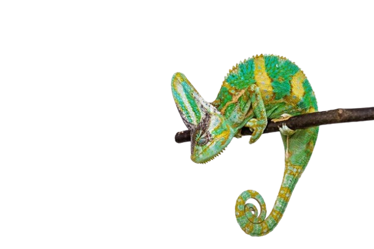

Budapest
ZOO
Szeretettel várjuk kedves látogatóinkat, akik több mint 1000 állatfajt fedezhetnek fel egy nagyszerű élmény keretén belül!

Járd körbe
a kertet és deríts fel minden
érdekességet!
Fedezd
Fel!

Etetés
Néhány állatunk szereti ha látogatóink kezéből csemegézhetnek.

Merülj alá!
A víz alatti alagútban találkozhatnak a látogatók a különböző halakkal, rájákkal és cápákkal is!
Biodóm
A biodóm különleges burka alatt a látogatókra sok izgalmas kiállítás vár.

Nyitvatartás
Hétfő - Péntek
9:00 - 18:00
Szombat - Vasárnap
9:00 - 19:00
Felhívjuk szíves figyelmüket, hogy a pénztárak minden időszakban 1 órával a kert zárása előtt
zárnak.
Az állatkertbe történő belépésre legkésőbb a kert zárása előtt egy órával van lehetőség. Ezután
az állatkertbe előre váltott jeggyel, vagy bérlettel sincs lehetőség belépésre.
Az év folyamán ünnepnapokon az állatkert zárva tart.
Egyes állatházak csak később, 10:00-kor nyitnak.